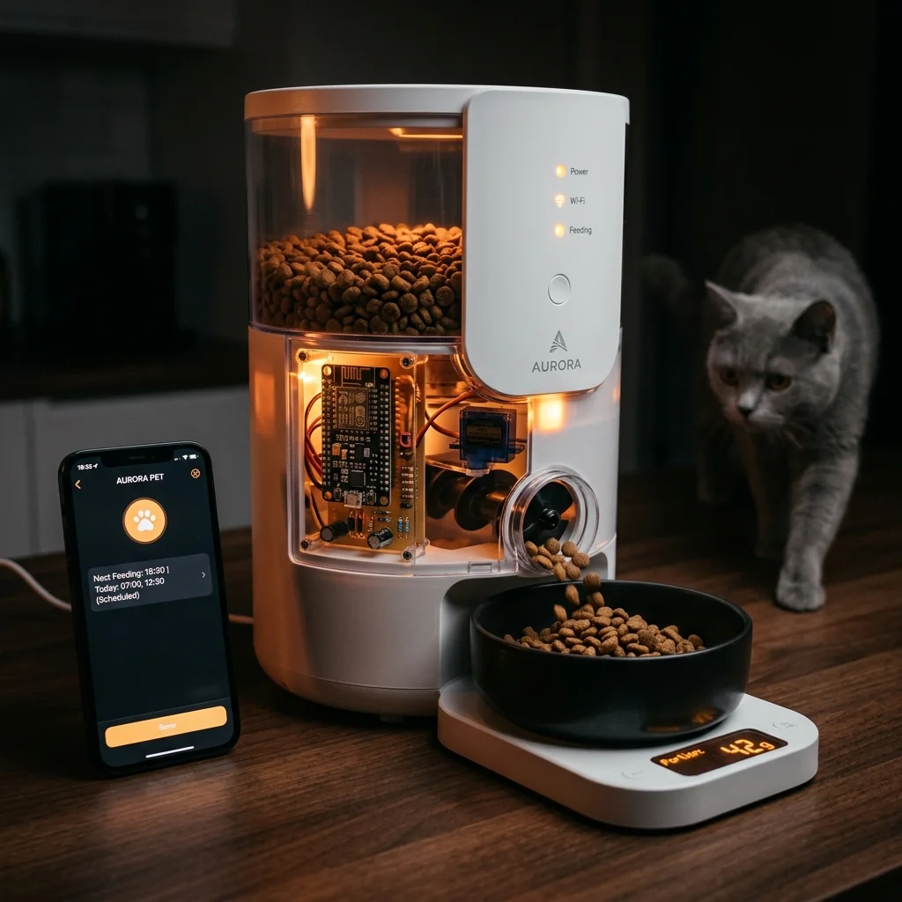

Automatic Pet Feeder

Project Overview
The Automatic Pet Feeder is a Wi-Fi connected device built around an ESP8266 that dispenses precise portions of pet food on a programmable schedule. A servo-motor-driven auger mechanism rotates for a calibrated duration to deliver consistent portion sizes. The device synchronises its clock with an NTP server over Wi-Fi, ensuring feeding times are accurate even after power cuts. A load sensor in the bowl detects whether food has been eaten, logging meal data to the cloud.
Key Features & Implementation
- NTP-Synced Scheduling: Up to 4 feeding times per day can be configured through a web interface. The ESP8266 compares the NTP-synced RTC time against the schedule every minute and triggers the servo when a match is found — accurate to within ±5 seconds regardless of network latency.
- Portion Calibration: The servo auger was calibrated to dispense exactly 10g of dry kibble per revolution at 30° rotation increments. Portion size is configurable from the web UI in 10g steps up to 100g per meal without any firmware changes.
- Bowl Load Sensing: A HX711 load cell amplifier connected to a 1kg load sensor detects remaining food weight after each dispense and pushes the reading to a Telegram bot — alerting when the bowl has not been touched within 2 hours of a scheduled feeding.
Challenges Solved
The servo motor drew enough current during stall conditions to brown out the ESP8266 over USB power. Separating the servo onto its own 5V 2A regulated supply with a common ground resolved all random reboots, and added a flyback diode across the servo supply lines to protect the ESP8266's GPIO from back-EMF spikes.
Explore Related Projects
Discover more of our robotics and IoT projects.

Smart Plant Watering System
ESP8266-based automatic irrigation system with soil moisture sensors and real-time mobile alerts via MQTT.

Home Automation System
ESP8266-based smart home controller managing lights, fans, and appliances via voice and app commands.